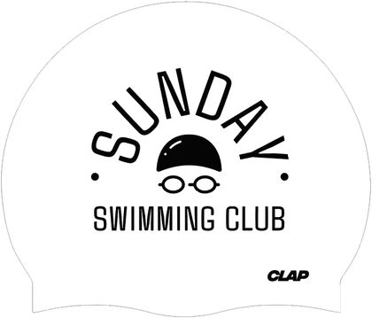

Albert Warzocha
Aktywny zawodnik z wieloma medalami Mistrzostw Polski w profesjonalnym pływaniu. Trening ze mną to wycisk z nastawieniem na jakość każdego ruchu. Staram się inspirować i zarażać swoją życiową pasją.
Klub
To coś więcej niż nauka pływania. Społeczność, w której rozwijamy umiejętności, budujemy pewność siebie i pokazujemy, że pływanie może stać się pasją na całe życie.

Od tych, którzy dopiero zaczynają przygodę z wodą, po osoby, które chcą doskonalić technikę, trenować bardziej świadomie i rozwijać się sportowo.
Nie skupiamy się wyłącznie na przepływaniu kolejnych długości. Zależy nam, żeby każdy rozumiał, nad czym pracuje, widział efekty treningów i czerpał z nich satysfakcję.
W sezonie letnim pływamy też openwater oraz na pływalni w Parku Kasprowicza.
Trenerzy

Aktywny zawodnik z wieloma medalami Mistrzostw Polski w profesjonalnym pływaniu. Trening ze mną to wycisk z nastawieniem na jakość każdego ruchu. Staram się inspirować i zarażać swoją życiową pasją.
Kiedyś pływałem zawodniczo, teraz spełniam się w roli trenera. Pasjonuje mnie sport w każdej formie. Uczę świadomego pływania z niejedynkowym podejściem do całego procesu.
Jak dobieramy grupy

Dla osób na początku albo z lękiem przed wodą.

Pływasz, ale chcesz robić to lepiej i świadomiej.

Regularne treningi z planem i widocznym postępem.

Przygotowania sportowe i praca na wyniku.